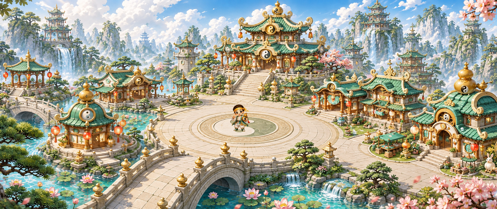

<!doctype html><html lang="zh-CN"><meta charset="utf-8"><meta name="viewport" content="width=device-width, initial-scale=1"><title>五行奇谈 · 主城 HUD</title><style>body{margin:0;background:#173f35;color:#fff7de;font:16px/1.6 "Microsoft YaHei",sans-serif}header{padding:18px 32px;display:flex;gap:24px;align-items:center;flex-wrap:wrap}h1{margin:0;font-size:23px}p{margin:0;opacity:.85}.scene{position:relative;width:100%;aspect-ratio:2560/1080}.scene img{position:absolute;inset:0;width:100%;height:100%;display:block}a{color:#ead093}</style><header><h1>五行奇谈 · 主城 HUD</h1><p>战斗 / 观战 / 角色 · 三入口视觉预览</p><a href="placement.json">位置清单</a><a href="README.md">接入与重建</a></header><main class="scene"></main></html>